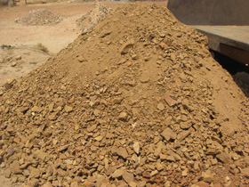
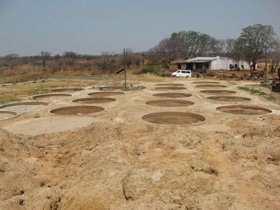

General Information
Murland Mining is a registered gold mining company which is mining gold on the 1230 hectares of gold mining claims on the 4000 hectares Shangwe Ranch owned by the company managing director, Mohamed Amin Koshen. All mineral rights on the property has been registered by M A Koshen in his personal capacity. This property is situated on a rich gold belt area in Chegutu central Zimbabwe within 10km radius of the two large gold mines, Dalny Mine to the west and Elvington to the east.
 The Shangwe ranch is also home to ten small scale gold mines that were in operation in Zimbabwe colonial times, prior to 1935 and were abandoned just before the second world war. These mines are listed below and production records exist, refer to the hand book "Geology to the lower Mupfure gold belt Hartley and Lomagundi district"